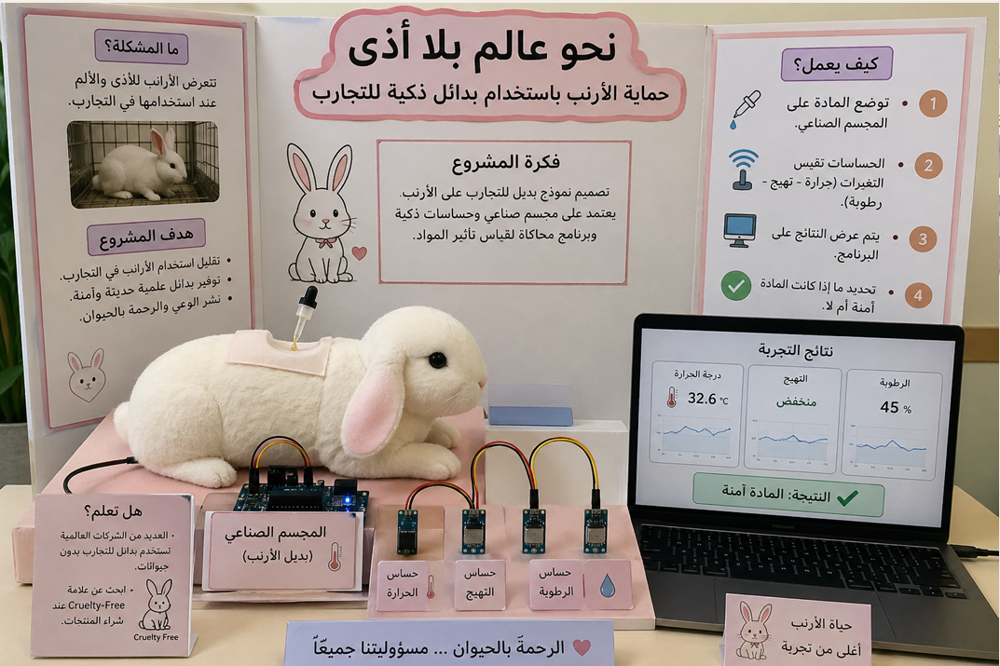
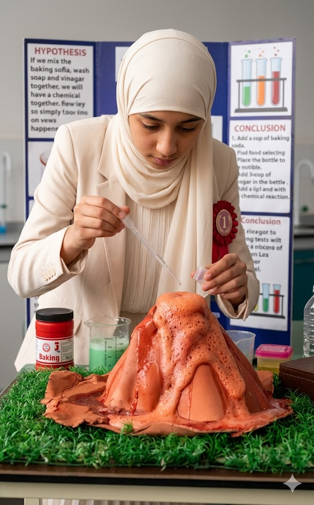
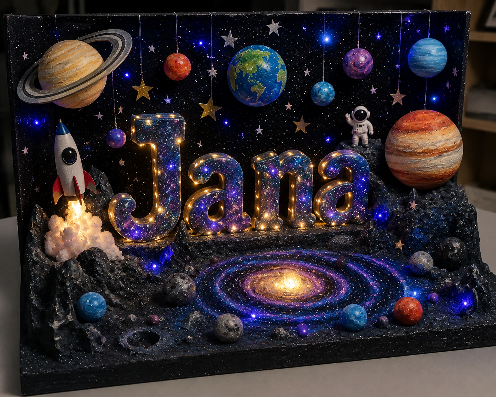

اضغط على صورة المشروع لتكبيرها، أو تصفح ملفات المشاريع والعروض مباشرة

ابتكار وتصميم نموذج متطور كبديل للتجارب على الأرانب؛ يعتمد على مجسم صناعي مزود بحساسات ذكية فائقة الدقة وشاشات محاكاة لقياس مستويات الحرارة والتهيج والرطوبة حمايةً للحياة الحيوانية.

نموذج محاكاة واقعي وتفاعلي لانفجار البركان، تم تصميمه وتطويره بدقة عالية في الألوان والتفاصيل المجسمة لعرض تجربة علمية حية ومتميزة في معرض العلوم المدرسي.

لوحة عرض ومجسمات تفاعلية ذكية لاستكشاف الفضاء والمجموعة الشمسية، تركز على أبعاد الكواكب والنجوم ضمن تصميم فلكي جذاب ومبتكر لتسهيل الشرح الدراسي.